review
Computational Pathology, CPATH¶
Introduction¶
Diagnostic disciplines, such as pathology and radiology, often heavily rely on recognition of patterns in data and the interpretation of such patterns in the wider context of the patient1.
Advantages of applying AI to clinical practice1:
1. improve accuracy, reproducibility and speed
2. ease workloads for clinicians
Main Chanllages:
1. gigapixels -> usually two-stage paradigm(can't conduct end-to-end training)
2. lack of localized annotations -> weakly supervised learning
3. negative patches dominate (unblanced) -> easily suffer from overfitting and unable to learn rich feature representation
4. heterogeneity
BACKGROUND
发展背景，意义
这个领域所面临的独特的问题是什么？
领域内有哪些细分方向？
Data¶
Data Format¶
WSI¶
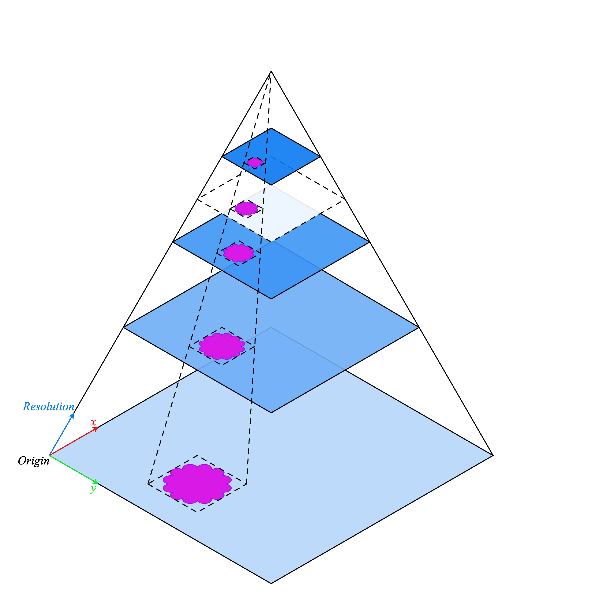
Public Dataset
| Dataset Name | Category | Size | Annotation Level | Time | Link |
|---|---|---|---|---|---|
| CAMELYON | Breast Cancer | 1399 | WSI | 2016 | |
| TCGA |
Microscopic Images¶
Foundation Models¶
CTransPath¶
DINO¶
Networks¶
AB-MIL2, ICML, 2017, By Maximilian Ilse etc.¶
1 Contributions
- modeling the MIL problem as learning the Bernoulli distribution of bag labels
- introducing a gated-attention based, end-to-end trainable deep MIL framework
2 Methods
2.1 Problem Formulation
Given a bag of instances \(X= \{x_1,x_2,...,x_m\}\), the corresponding label is \(Y\), where instance \(x_i \in \mathbb{R}^n\). The label \(y_i\) of the instance \(x_i\) also exists but is inaccessible. The length of each bag can be different, which means \(m\) varies in each bag.
To simplify the problem, Ilse assume the label of the bag follows the Bernoulli distribution, i.e. \(Y \in \{0,1\}\). Ilse also assume that instances in each bag are independent, i.e. permutation-invariant. Then the problem can be formulated in the following form:
$$
Y = \left\{
\begin{aligned}
0 &, \text{if} \sum_i y_i = 0\\
1 &, \text{otherwise}
\end{aligned} \right.
$$
We can also rewrite the formula as below:
$$
Y=\max_{i}\{y_i\}
$$
The MIL problem can be divided into two main approaches:
-
instance-level approach:
Firstly do the instance level classification task, then aggregate all instance labels to get the bag label. Generally speaking, instance labels are inaccessible, so the MIL model may be trained insufficiently and introduce additional errors to the bag classifier. -
embedding-level approach:
Firstly mapping all instances to low-dimensional embeddings. Then aggregate all embeddings to a bag representation (this step is called MIL Pooling by Ilse). Finally, input the bag representation to the bag classifier to predict the label probablity distribution.Just a very common paradigm, only break the whole image into many patches, then proceed with Backbone (feature extraction), Neck (feature aggregation), Head (prediction).
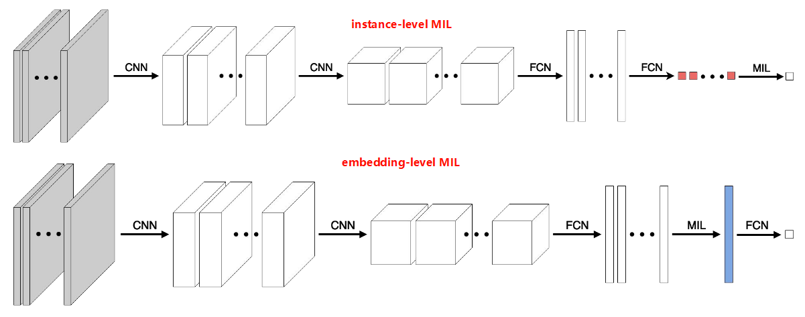
2.2 (Gated) Attention-based MIL
Ilse proposed a trainable (gated) attention-based MIL pooling operator, which had the advantage of flexibility and interpretability. The attention mechanism proposed by Ilse is as follows:
$$
a_k = \frac{\text{exp} \{ w^T tanh(Vh_k^T) \} }{\sum_{j=1}^{K} \text{exp} \{ w^T tanh(Vh_j^T) \}}
$$
where \(w \in \mathbb{R}^{L×1}\), \(V \in \mathbb{R^{L×M}}\), \(h_k \in \mathbb{R}^{1×M}\) is the embedding of the instance \(x_k\).
Ilse noticed that \(tanh\) function is approximately linear for \(x \in [-1,1]\). It may be inefficient to learn complex relations. To enhance the non-linearity of the operator, Ilse used the gated attention mechanism:
$$
a_k = \frac{\text{exp} \{ w^T (tanh(Vh_k^T) sigm(Uh_k^T) ) \} }{\sum_{j=1}^{K} \text{exp} \{ w^T (tanh(Vh_j^T) sigm(Uh_j^T) ) \}}
$$
where \(w \in \mathbb{R}^{L×1}\), \(V \in \mathbb{R}^{L×M}\), \(U \in \mathbb{R}^{L×M}\), \(h_k \in \mathbb{R}^{1×M}\) is the embedding of the instance \(x_k\).
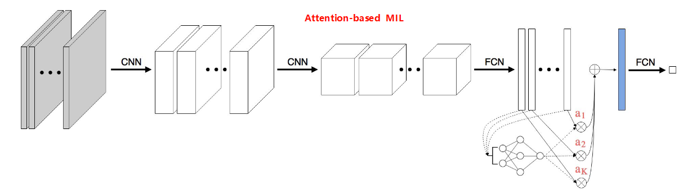
The use of \(tanh\) can “include both negative and positive values for proper gradient flow”. I guess the aim of reserving negative and positive values may be to make the available feature space larger.
It's true that \(tanh\) function is almost linear for \(x \in [-1,1]\). But I don't completely agree with Ilse's solution in the paper. \(Sigmoid\) function is also linear for specific range. Althought parameters \(U\) and \(V\) are different, we can't guarantee \(sigmoid\) can correct the linearity of \(tanh\) all the time. In some experiments, gated attention may fail due to this reason. I think a better approach is to find a non-linear function for \(x \in [-1,1]\) with the same transformation \(U\).
3 Experiments
3.1 Setup
Data: microscopic image, cropped into patches
Backbone: SC-CNN4, IEEE transactions on medical imaging, 2016
Neck: (gated) attention MIL
Head: MLP
Loss: CE loss (in the appendix of the paper, the author mentioned their stopping criteria was "validation error + loss", but there was no clear indication of what these indicators were)
3.2 Results
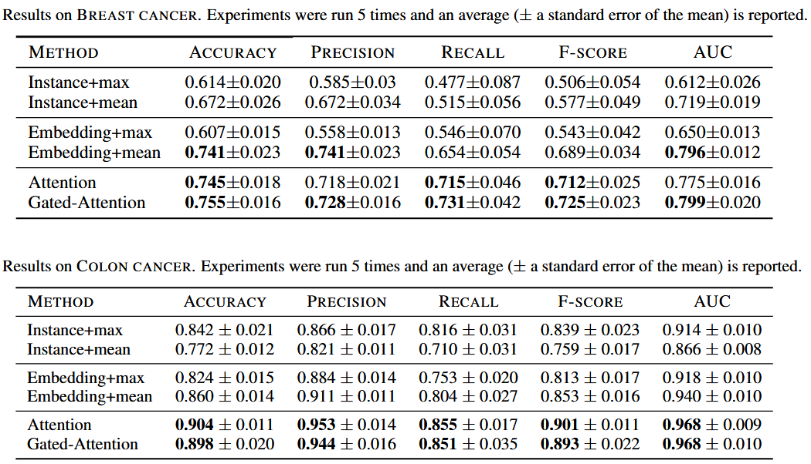
4 Limitations
- Ilse assumes the MIL pooling operator is permutation-invariant, so it can't fully utilize the spatial information during aggregation. We can consider how to incorporate spatial information into the aggregation process.
CLAM6, Nature Biomedical Engineering, 2021, By Lu etc.¶
1 Contributions
2 Methods
3 Experiments
3.1 Setup
3.2 Results
4 Limitations
DS-MIL5, CVPR, 2021, By Li etc.¶
1 Contributions
- an instance-level feature extractor based on self-supervised contrastive learning
- a multi-scale representation considering multi magnifications
- a hybird architecture that combines both instance MIL approach and embedding MIL approach, e.g. a novel non-local MIL aggregator
2 Methods
The overview of DSMIL is as follows:
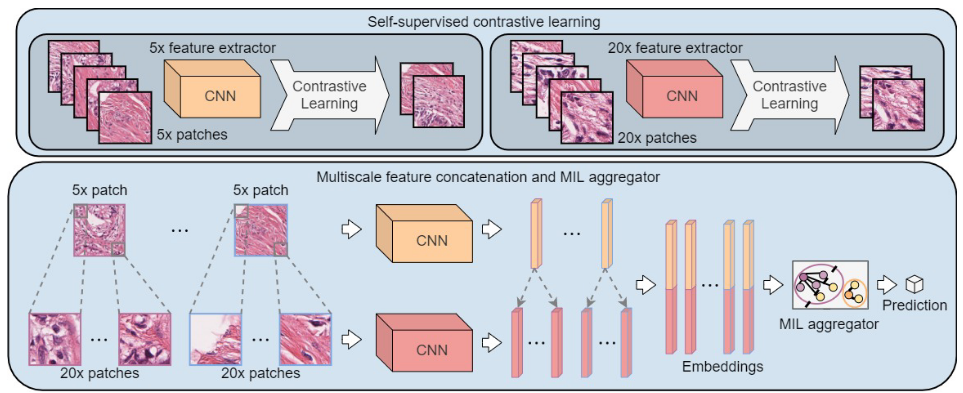
2.1 MIL Aggregator with Masked Non-local Operation
In contrast to most previous methods that either learn an instance classifier or a bag classifier, DSMIL jointly learns instance classifier and the bag classifier as well as the bag embedding in a dual-stream architecture.
Here, stream may mean data stream that the input flows.
Given a feature extractor \(f\), each instance \(x_i\) can be projected into an embedding \(h_i = f(x_i) \in \mathbb{R}^{L}\). The first stream uses an instance classifier \(g_m\) on each instance embedding, followed by a max-pooling on the scores:
$$
c_m(B) = g_m(\{f(x_1),f(x_2),...,f(x_n) \})=max\{W_0 h_1, W_0 h_2, ..., W_0 h_n\}
$$
where \(W_0\) is the weight vector of the instance classifier.
The second stream aggregrates all instance embeddings into a bag embedding which is further scored by a bag classifier. Through the first stream, we get the critical instance embedding \(h_m\), then we transform each embedding \(h_i\) (including \(h_m\)) into two vectors, query \(q_i \in \mathbb{R}^L\) and information \(v_i \in \mathbb{R}^L\), which are given respectively by:
$$
q_i = W_q h_i, v_i = W_v h_i
$$
where \(W_q\) and \(W_v\) each is weight matrix. We then define a distance measurement \(U\) between an arbitraty instance embedding \(h_i\) and critical instance \(h_m\) as:
$$
U(h_i,h_m) = \frac{exp(〈q_i,q_m〉)}{\sum_{1}^{n} exp(〈q_i,q_m〉)}
$$
where \(〈q_i,q_m〉\) denotes the inner product of two vectors.
This operation is similar to self-attention, but differs in that the query-key matching is performed only between the critical token and the other tokens (including the critical token itself). Moreover, instead of matching each query with additional key vectors in self-attention, the query is matched with other queries and no key vector is learned.
The bag embedding \(b\) is represented by the weighted instance embeddings as:
$$
b=\sum_{1}^{n} U(h_i,h_m)v_i
$$
The bag score \(c_b\) is then given by:
$$
c_b = g_b(b) = W_bb
$$
where \(W_b\) is the weight vector for binary classification.
The author mentioned that, for multi-class classification problem, we can have multi-head \(W_q\) and \(W_v\) to produce \(C\) bag embeddings, i.e. the bag embedding \(b \in \mathbb{R}^{C×L}\), then followed by a bag classifier.
I think the idea of \(C\) bag embeddings is similar to prototype. The difference between them is that, prototype only has one dimension, i.e. including the prototype or not, but \(C\) bag embeddings are like high-dimensional feature vectors in different semantic space.
I don't know which one of them is more effective.
The final score of the bag is the average of the scores of the two streams:
$$
c(B)=\frac{1}{2}(c_m(B)+c_b(B))
$$
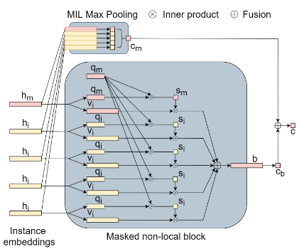
2.2 Self-supervised Contrastive Learning of WSI Features
The author use SimCLR method to learn the patch feature embeddings.
SimCLR is a SOTA self-supervised contrastive learning framework that enables robust representations to be learned without the need for manual labels. SimCLR deploys a contrastive learning strategy that trains a CNN to associate sub-images from the same image with a batch of sub-images. The sub-images are randomly selected in a batch of images and fed into two random augmentation branches. The model is trained to maximize the agreement between the sub-images that are from the same image using a contrastive loss.
2.3 Locally-constrained Multiscale Attention
The author adopt a pyramidal concatenation strategy to intergrate features of WSIs from different magnifications. First, they use different feature extractors trained from different magnifications to encode patches embedding. Then they just concat embeddings from different magnifications in the same region.
There are two major benefits of this concatenation method: 1) The first part of the resulted feature embeddings from the same region is the same, which assigns a similar attention weights through the distance measurement based on inner product. The second part of the feature deploys a discrimination in the feature space. 2) The information from different scales are preserved in the feature vectors, allowing the network to select the appropriate information \(v_i\) across different scales.
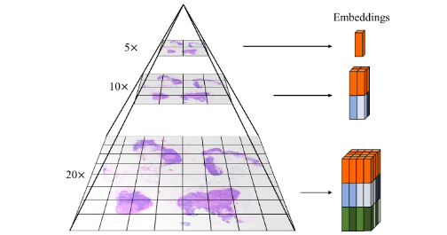
3 Experiments
3.1 Setup
Data: WSI, cropped into 224×224 patches without overlap
Backbone: Resnet18 backbone with SimCLR learning strategy
Neck: dual-stream architecture
Head: MLP and mean operator
Loss: not mentioned, need to check github repo
3.2 Results
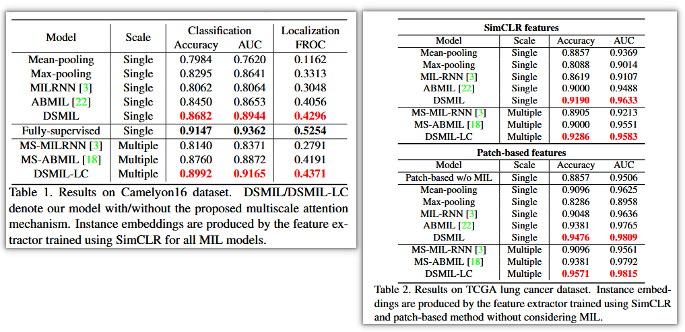
4 Limitations
- designing self-supervised learning strategies that adapt to the characteristics of histopathological data
- mechanisms that model the spatial relations can be integrated to capture macroscale features in WSI that are spatially structured and could potentially lead to further improvement
TransMIL3, NeurIPS, 2021, By Shao etc.¶
1 Contributions
- propose a new Transformer-based MIL framework with conditional position encoding, which comprehensively considered contextual spatial information (typically Transformer only takes the global correlation into account)
- use nyström-based Transformer7 to approximate Transformer to reduce computational complexity
2 Methods
2.1 TransMIL Framework
In the practical diagnosis, pathologists will consider both the contextual information around a single area and the correlation between different areas when making a diagnosistic decision. Based on this idea, the author proposed the TransMIL. Overview of the TransMIL is as below.
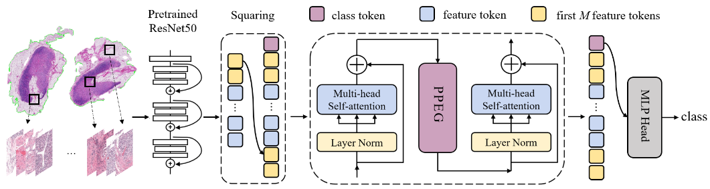
The core of the TransMIL is the
TPT module, mainly containing two blocks: Transformer block and PPEG block. Transformer block is used to compute correlation between instance sequences. PPEG (Pyramid Position Encoding Generator) is devised to encode conditional position information, including morphological and spatial information. The pseudo-code of the TPT module is as follows: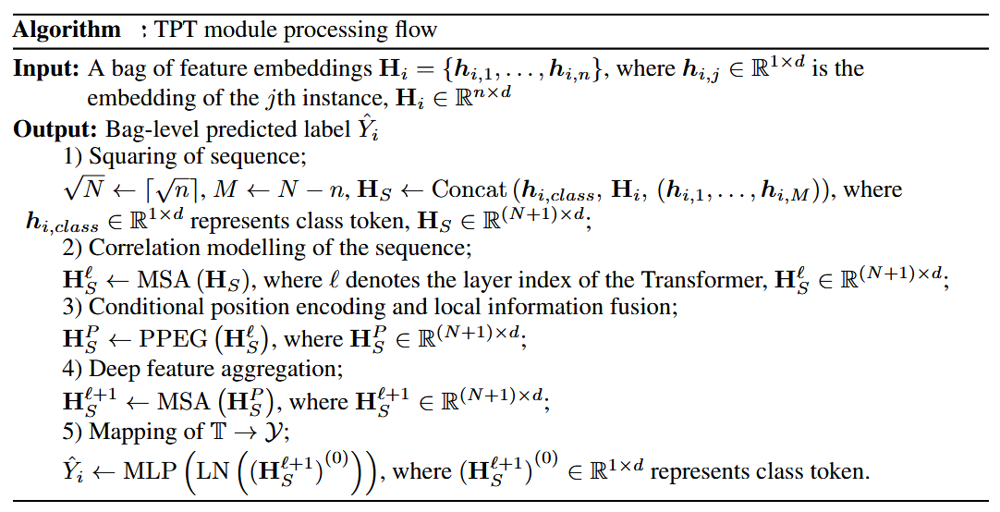
Transformer block is discussed in the section 2.2. The processing flow of the PPEG is shown below.
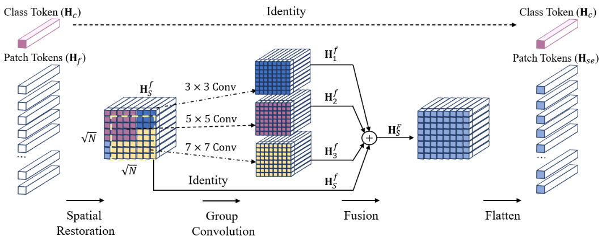
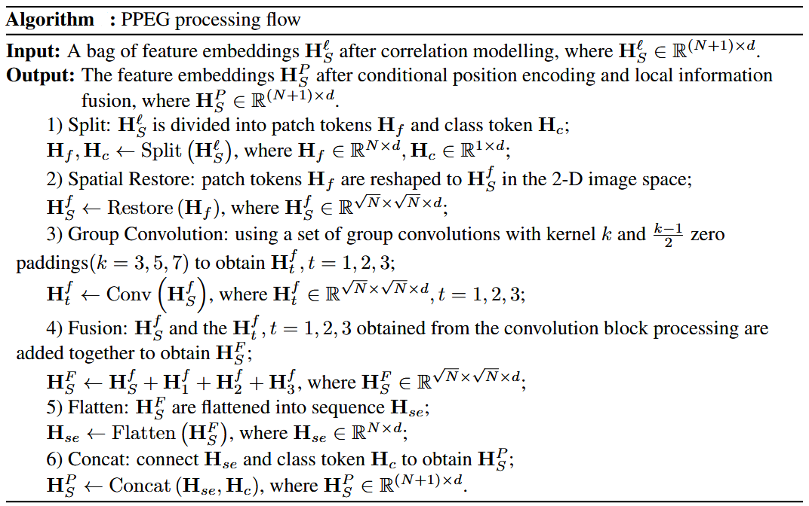
The author demonstrated through ablation experiments that PPEG is more effective than sin position encoding in the TransMIL framework.
2.2 Approximation of Transformer
The Author use nyström-based Transformer7 to reduce the computational complexity from \(O(n^2)\) to \(O(n)\). The approximated self-attention form \(\hat{S}\) can be defined as:
$$
\hat{S} = \text{softmax}(\frac{Q \tilde{K}^T}{\sqrt{d_q}})(\text{softmax} (\frac{\tilde{Q} \tilde{K}^T}{\sqrt{d_q}}))^+ \text{softmax} (\frac{\tilde{Q} K^T}{\sqrt{d_q}})
$$
where \(\tilde{Q}\) and \(\tilde{K}\) are the \(m\) landmarks selected from the original \(n\) dimensional sequence of \(Q\) and \(K\), and \(A^+\) is the Moore-Penrose pseudoinverse of A. By doing this, the TPT module with approximation processing can satisfy the case where a bag contains thousands of tokens as input.
3 Experiments
3.1 Setup
Data: WSI, cropped into
Backbone: Resnet50 trained on ImageNet
Neck:
Head:
Loss:
3.2 Results
Accuracy and AUC reaches SOTA on CAMELYON16, TCGA-NSCLC and TCGA-RCC dataset
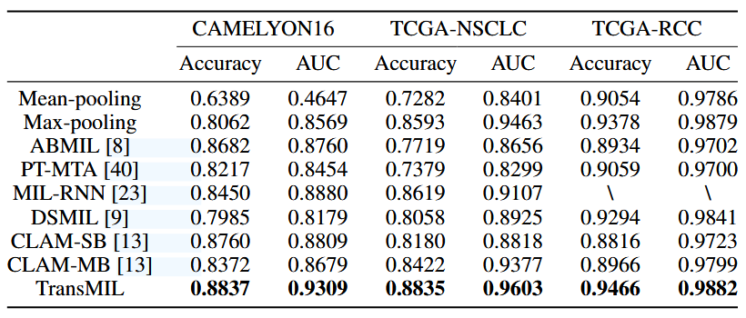
4 Limitations
- pretained model is ResNet trained by ImageNet. Perhaps we can try using specialized foundation model in the field of pathology.
- Is there any approximation form of Transformer (or other way to compute correlation) to reduce memory and computational complexity at the same time?
Github Repo¶
- lingxitong/MIL_BASELINE: A library that integrates different MIL methods into a unified framework
- sinai-computational-pathology/CPath_SABenchmark
References(out-of-order)¶
-
Van der Laak J, Litjens G, Ciompi F. Deep learning in histopathology: the path to the clinic[J]. Nature medicine, 2021, 27(5): 775-784. ↩↩
-
Ilse M, Tomczak J, Welling M. Attention-based deep multiple instance learning[C]//International conference on machine learning. PMLR, 2018: 2127-2136. ↩
-
Shao Z, Bian H, Chen Y, et al. Transmil: Transformer based correlated multiple instance learning for whole slide image classification[J]. Advances in neural information processing systems, 2021, 34: 2136-2147. ↩
-
Sirinukunwattana K, Raza S E A, Tsang Y W, et al. Locality sensitive deep learning for detection and classification of nuclei in routine colon cancer histology images[J]. IEEE transactions on medical imaging, 2016, 35(5): 1196-1206. ↩
-
Li B, Li Y, Eliceiri K W. Dual-stream multiple instance learning network for whole slide image classification with self-supervised contrastive learning[C]//Proceedings of the IEEE/CVF conference on computer vision and pattern recognition. 2021: 14318-14328. ↩
-
Lu M Y, Williamson D F K, Chen T Y, et al. Data-efficient and weakly supervised computational pathology on whole-slide images[J]. Nature biomedical engineering, 2021, 5(6): 555-570. ↩
-
Xiong Y, Zeng Z, Chakraborty R, et al. Nyströmformer: A nyström-based algorithm for approximating self-attention[C]//Proceedings of the AAAI conference on artificial intelligence. 2021, 35(16): 14138-14148. ↩↩